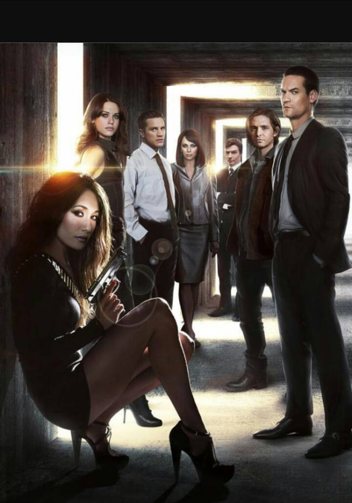

Nikita
This was produced by American TV series.
There was a division which belonged to the government for killing political foes.
However division was a fictional department,not known by the world.
All the spies came from prison or had a complex background.
When they entired,division would fake their death certificate.
That's why people didn't knew them.
However,the heroine,Nikita,she rebel,fled and tried to defeat them.
After she went out there,she began destroying any of their horrible plan.
She also found a team.
She wanted to help more human!